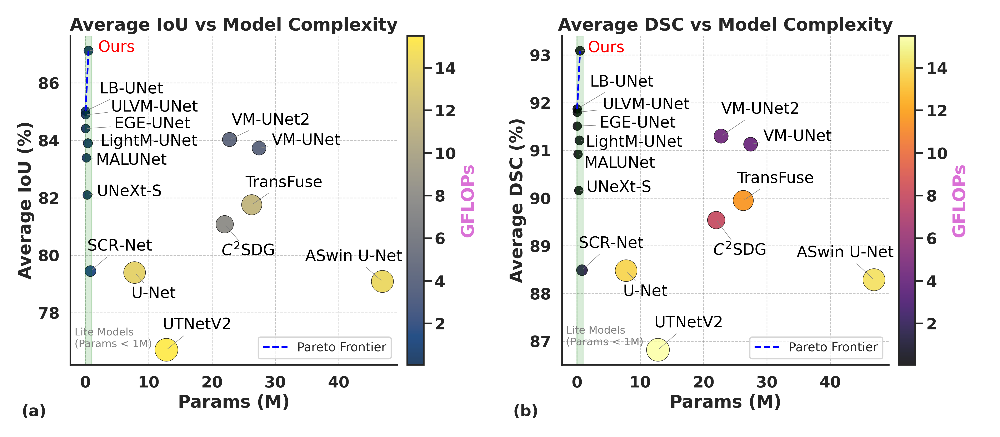
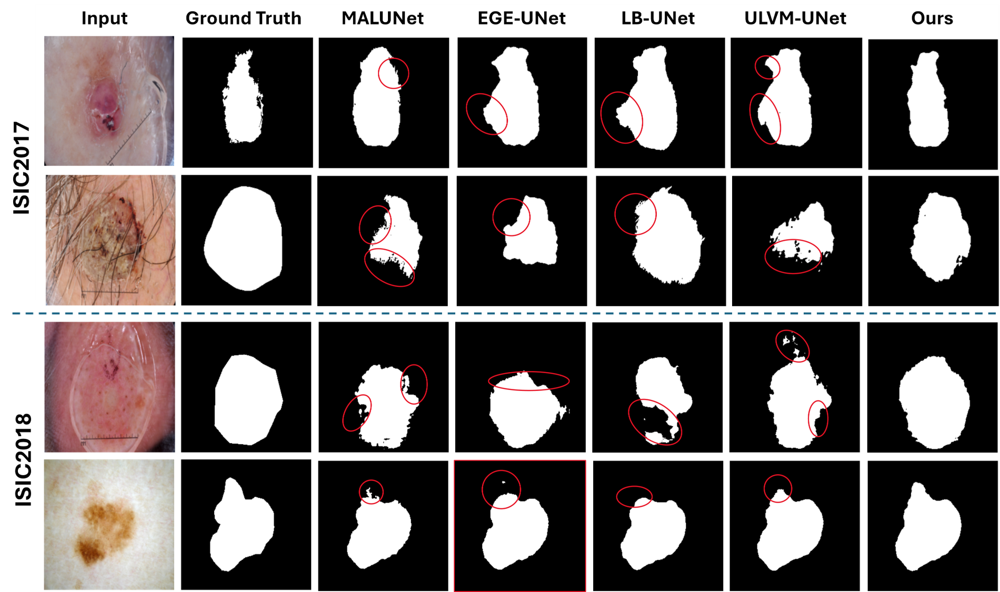
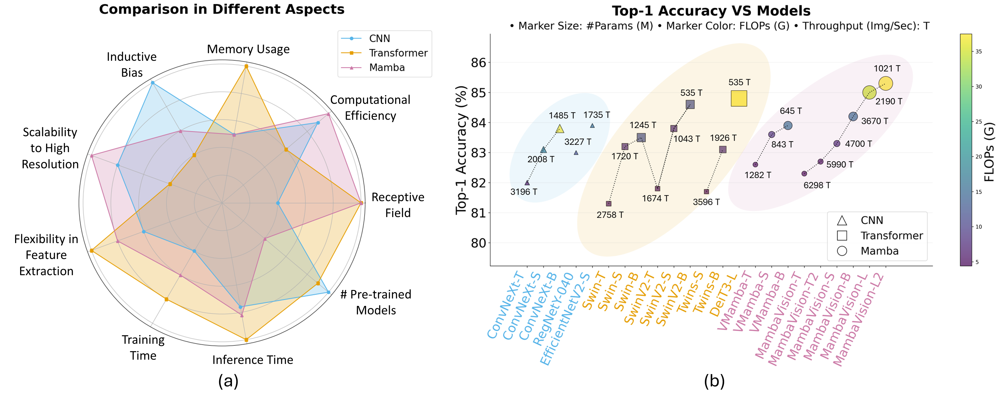
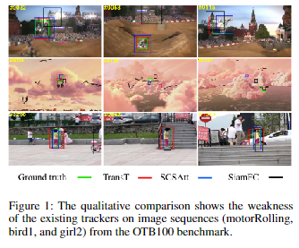
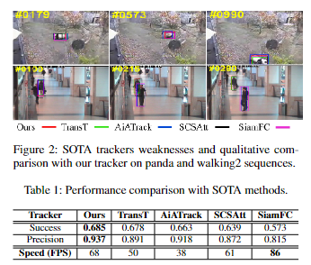
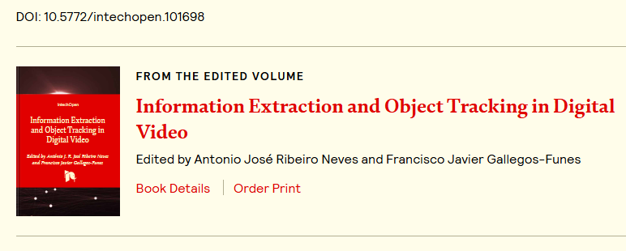
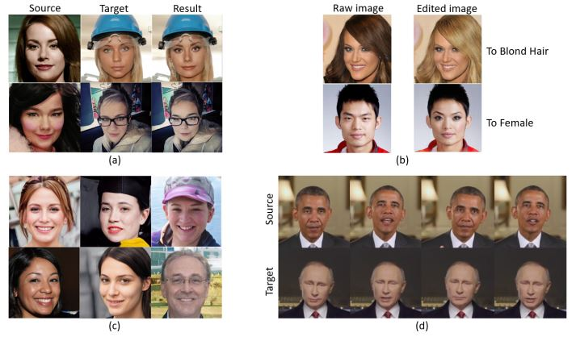
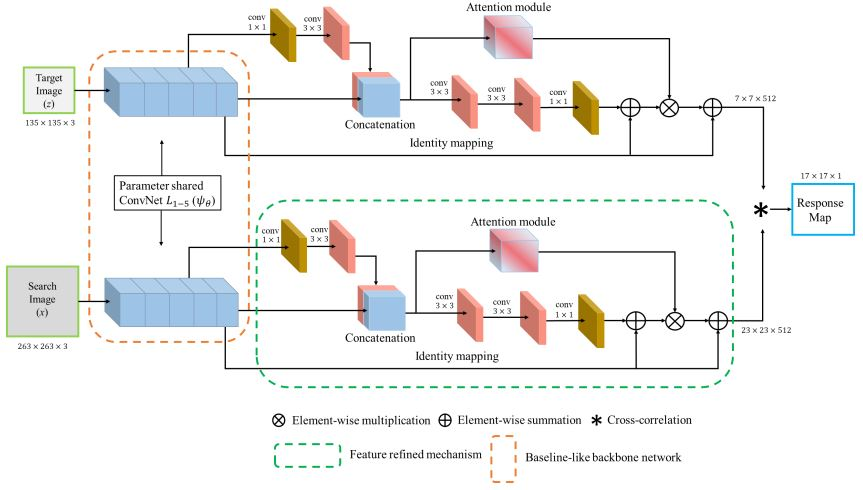
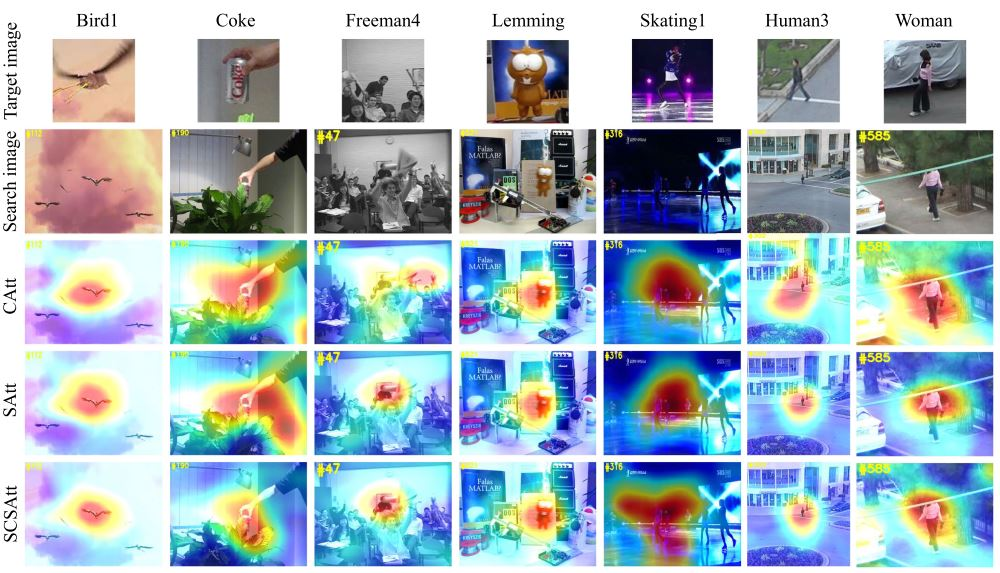
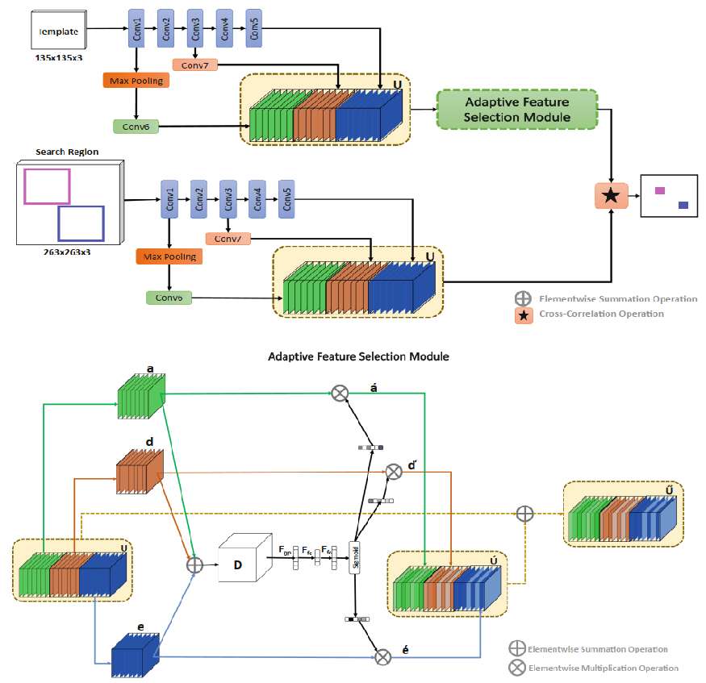

Md Maklachur Rahman
I am a PhD student in Computer Science at Texas A&M University. My research focuses on medical image segmentation, computer vision, efficient and lightweight AI, vision-language models, and multimodal AI. I am interested in building efficient and lightweight AI systems for medical image analysis, computer vision, and broader multimodal learning. Before joining Texas A&M, I worked as a researcher at Kyungpook National University, South Korea, and as a Software Engineer at Samsung Research Bangladesh.
News
- Mar 2026📝 IJCV: The invited extended journal version of AULUNet has been submitted and is currently under review.
- Feb 2026📝 MICCAI 2026: Submitted two papers focusing on diffusion models and vision-language models.
- Feb 2026🎉 CVPR 2026 (Main): MambaLiteUNet: Cross-Gated Adaptive Feature Fusion for Robust Skin Lesion Segmentation was accepted.
- Nov 2025🎉 Recognized as Outstanding Reviewer for BMVC 2025.
- Nov 2025✈️ Attended BMVC 2025 in Sheffield, UK, and presented our work.
- Feb 2024🎉 Received TAMU CS Dept. Travel Award.
- Sep 2025🎉 BMVC 2025 (Main): AULUNet: An Adaptive Ultra-Lightweight UNet Framework for Efficient Skin Lesion Segmentation in Resource-Constrained Environments was accepted for Oral Presentation (Top 3.47%).
- Oct 2024📝 arXiv version available for Mamba in Vision: A Comprehensive Survey of Techniques and Applications.
- Feb 2024🎉 Received AAAI 2024 Travel Award.
- Oct 2023AAAI 2024 Student Abstract and Poster Program: Learning Random Noise Salient Feature Fusion Siamese Network for Low-Resolution Object Tracking was accepted.
- Oct 2023AAAI 2024 Doctoral Consortium: Target Focused Shallow Transformer Framework for Efficient Visual Tracking was accepted.
Selected Publications
See full publication list



Target Focused Shallow Transformer Framework for Efficient Visual Tracking
AAAI-24 Doctoral Consortium Oral

Learning Random Noise Salient Feature Fusion Siamese Network for Low-Resolution Object Tracking
AAAI-24 Student Abstract and Poster Program

Siamese-based Attention Learning Networks for Robust Visual Object Tracking
Book Chapter, IntechOpen 2022




For full list of publications, please see my Google Scholar profile.
Education
Experience
Honors and Awards
- Outstanding Reviewer – BMVC 2025, Sheffield, UK
- TAMU CS Department Travel Grant – 2025
- IEFS Graduate Scholarship – TAMU, 2025
- AAAI-24 Travel Award – AAAI 2024, Vancouver, Canada
- Best Student Paper Award – IW-FCV 2020 [Certificate]
- Outstanding MS Thesis Award – Kyungpook National University (KNU), South Korea, 2020 [Certificate]
- Brain Korea (BK) 21 PLUS Scholarship – KNU, South Korea, September 2018–August 2020
- KNU International Graduate Scholarship (KINGS) – Full Scholarship, KNU, South Korea, September 2018–August 2020
- University Merit Scholarship – Chittagong University of Engineering & Technology, Bangladesh, 2009–2013
Reviewer Service
Advising and Mentoring
Mentoring activities include ongoing student guidance at Texas A&M University, co-mentored projects, and mentoring with publication outcomes.
Current and Recent Student Mentoring
-
Co-mentoring GroupsJanuary 2026 – PresentGroup 1 – Gender Bias in AIStudents: Nitya Khurana, Harrison Li, Yuqing Cao, and Ayaan Budhwani.Group 2 – Segment Anything Model (SAM) for Medical Image SegmentationStudents: Fawwaz Memon, Nethum Weerasinghe, Armaan Khatwani, and Vidhu Karthik.Group 3 – Cross-Modality Translation (X-ray to CT/MRI)Students: Kaarthi Vedere, Ore Olayinka, Rivan Adhikari, and Rohan Doshi.
-
Rachit PatelSeptember 2025 – PresentProject Focus: Developing Efficient Architectures for Medical Imaging.
-
Phillip RoninSeptember 2025 – December 2025Project Focus: Early-stage ML/DL/CV Guidance Toward Real-world Projects.
-
Sayok BoseSeptember 2025 – December 2025Project Focus: Exploration of Deep Learning Architectures for Medical Image Segmentation.
-
Hemish RadadiyaJuly 2025 – December 2025Project Focus: Aerial Detection of Individuals in Flooded Regions.
-
Arunima ChowdhuryMay 2025 – December 2025Project Focus: Analyzing Transformer-Based Models for Polyp Segmentation.
-
Ashwin ParameswaranJune 2024 – October 2025Project Focus: Exploring Polyp segmentation with a Focus on Boundary Feature Extraction.
Mentoring with Publication Outcomes
Selected mentoring collaborations that resulted in publications or public research outcomes.
-
Deblina Mazumder Setu2024–2026
- Towards Enhancing Healthcare Data Privacy: Integrating BioClinicalBERT With Polyalphabetic Cipher for Entity Recognition and Anonymization
– [Paper]. - Evaluating the Efficacy and Site-Specific Performance of Machine Learning Approaches: A Comprehensive Review of Autism Detection Models
– [Paper]. - Affordable Early Detection of Autism Spectrum Disorder Using Innovative Eye-Tracking Methods
– [Paper].
- Towards Enhancing Healthcare Data Privacy: Integrating BioClinicalBERT With Polyalphabetic Cipher for Entity Recognition and Anonymization
-
Meet Arvindbhai MonparaJuly 2025 – December 2025
- Stranded Human Detection in Flooded Environments From UAV Imagery
– [Paper].
- Stranded Human Detection in Flooded Environments From UAV Imagery
-
Afrin Hayat2024
- Personalized Teaching Strategy Suggestion for Toddlers with ASD: A Machine Learning and Deep Learning Approach
– [Paper].
- Personalized Teaching Strategy Suggestion for Toddlers with ASD: A Machine Learning and Deep Learning Approach
-
Abhyudaya Singh Tak2022
- Visual Object Tracking: Datasets and Related Information
– [Paper].
- Visual Object Tracking: Datasets and Related Information